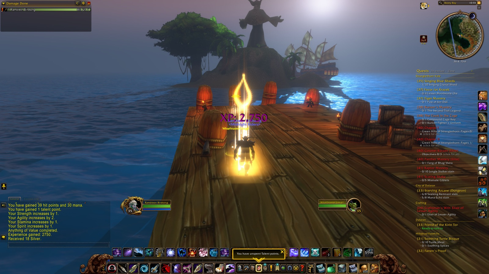
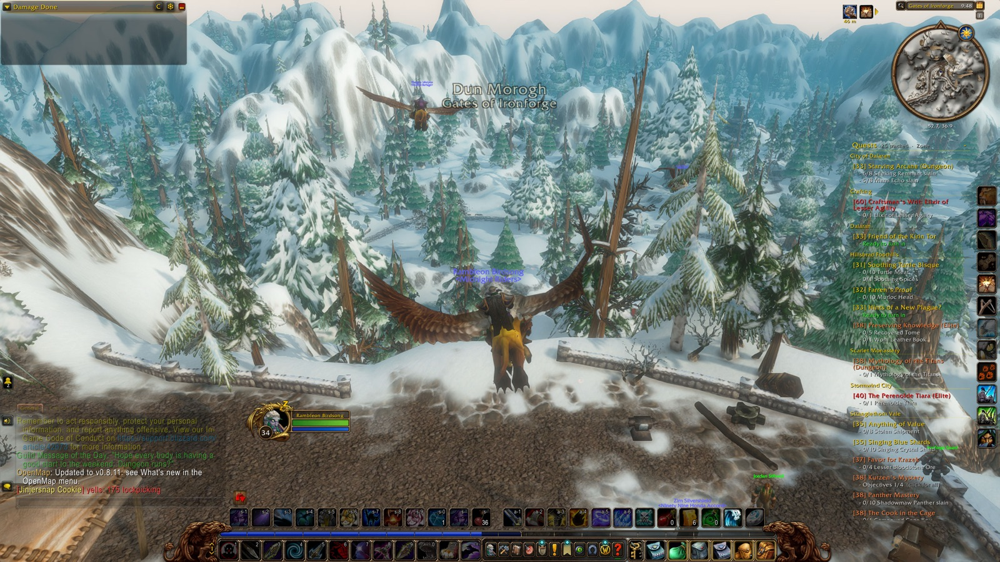
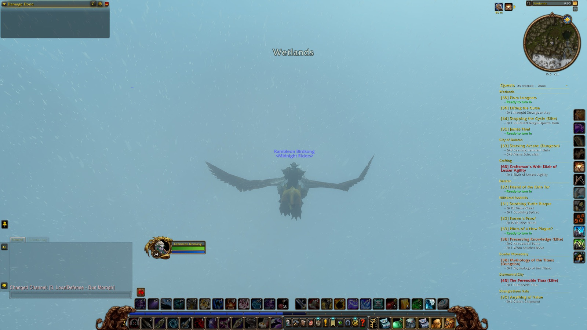
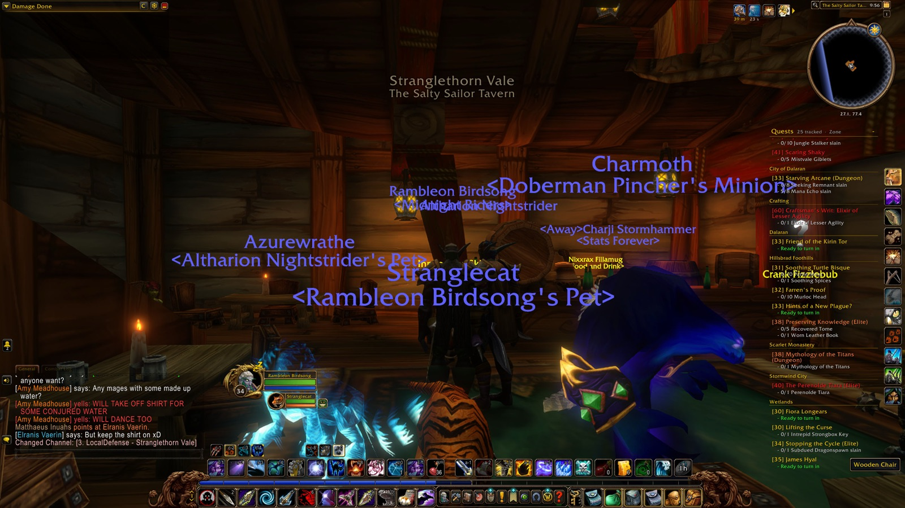

| Quest | Turned in at | Lv |
|---|---|---|
| Stranglethorn Vale | ||
| Chapter III | Nesingwary's Expedition | 34 |
| Tiger Mastery | Nesingwary's Expedition | 34 |
| Bloodscalp Ears | The Salty Sailor Tavern | 34 |
| Panther Mastery | Nesingwary's Expedition | 34 |
| Anything of Value | Booty Bay | 34 |
| Quest | Picked up at |
|---|---|
| Tiger Mastery | Nesingwary's Expedition |
| Panther Mastery | Nesingwary's Expedition |
| Zanzil's Secret | The Salty Sailor Tavern |
| Quest | Picked up at | Since |
|---|---|---|
| Sathrah's Sacrifice | Temple of the Moon | Chapter 3 |
| Crown of the Earth | Dolanaar | Chapter 5 |
| The Forgotten Heirloom | The Jansen Stead | Chapter 8 |
| Save Techbot's Brain! | Tinker Town | Chapter 9 |
| The Day After | Tinker Town | Chapter 9 |
| Westfall Stew | Westfall | Chapter 11 |
| Lost in the Thicket Things | Menethil Harbor | Chapter 16 |
| Essential Artificials | Tinker Town | Chapter 16 |
| Data Rescue | Tinker Town | Chapter 17 |
| The Grand Betrayal | Tinker Town | Chapter 17 |
| Shared Fury | Forest Song | Chapter 19 |
| The Tower of Althalaxx | Darkshore | Chapter 19 |
| Horrors in the Highland | The Green Belt | Chapter 20 |
| The Thandol Span | Dun Modr | Chapter 20 |
| A Grim Task | Dun Modr | Chapter 20 |
| The Dark Iron War | Dun Modr | Chapter 20 |
| Death to the Dragonmaw | Wetlands | Chapter 20 |
| Defeat Nek'rosh | Angerfang Encampment | Chapter 20 |
| Syndicate Assassins | Southshore Town Hall | Chapter 21 |
| Insane Druids | Forest Song | Chapter 22 |
| Talk of the Town | Southshore | Chapter 22 |
| Soothing Turtle Bisque | Southshore | Chapter 22 |
| The Color of Blood | Old Town | Chapter 22 |
| Bring Back a Bang | Dun Modr | Chapter 23 |
| Bartolo's Yeti Fur Cloak | Southshore | Chapter 23 |
| Slowing the Orc Advance | Silverwind Refuge | Chapter 25 |
| Crushridge Bounty | Southshore | Chapter 25 |
| Hints of a New Plague? | Southshore | Chapter 25 |
| An Alarming Request | Southshore Town Hall | Chapter 25 |
| Costly Menace | Southshore | Chapter 25 |
| Reclaimers' Business in Desolace | Hall of Explorers | Chapter 25 |
| Ironband Wants You! | The Library | Chapter 25 |
| Crashing the Wickerman Festival | Southshore | Chapter 28 |
| Stonegear's Search | Hall of Arms | Chapter 28 |
| Darkspear Islands Clash | Hall of Arms | Chapter 28 |
| Raptor Mastery | Nesingwary's Expedition | Chapter 31 |
| The Cook in the Cage | Kurzen's Compound | Chapter 31 |
| Kurzen's Mystery | Rebel Camp | Chapter 31 |
| Favor for Krazek | The Salty Sailor Tavern | Chapter 31 |
| Excelsior | Booty Bay | Chapter 32 |
| Shady Saltseers | The Salty Sailor Tavern | Chapter 32 |
| The Saltseer Captain | The Salty Sailor Tavern | Chapter 32 |
| Colonel Kurzen | Rebel Camp | Chapter 32 |
As far as Rambleon knows: a quest picked up before it was installed, or abandoned before it recorded that, is not here.
Chris Grizzly yells “by the light hold that boat”
Amy Meadhouse “|cnIQ2:|Hitem:4239::::::::14:1484::::::::Player-6933-0444E3DD:|h[Embossed Leather Gloves]|h|r anyone want?”
Amy Meadhouse “Any mages with some made up water?”
Amy Meadhouse yells “WILL TAKE OFF SHIRT FOR SOME CONJURED WATER”
Amy Meadhouse yells “WILL DANCE TOO”
Matthaeus Inuahs points at Elranis Vaerìn.
Elranis Vaerìn “But keep the shirt on xD”
Starpupil Melving “ka nogu”
Starpupil Melving “l ogar ogg”
Starpupil Melving “il ogar mu”
Starpupil Melving “kagg uruk g gul aaz'no magan”
Mrs Rosejam “no'bu”
Dr Vaedoom “ogerin”
Mordrat Devilhunter yells “GUL'ROK TAGO!!! KIL KEK MAZA'ROTHA!!!”


